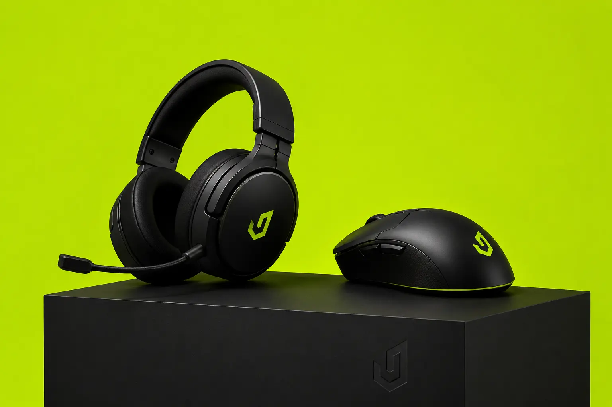
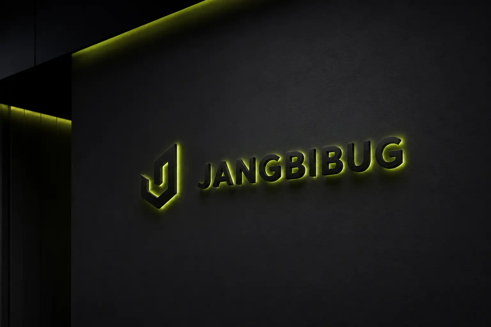
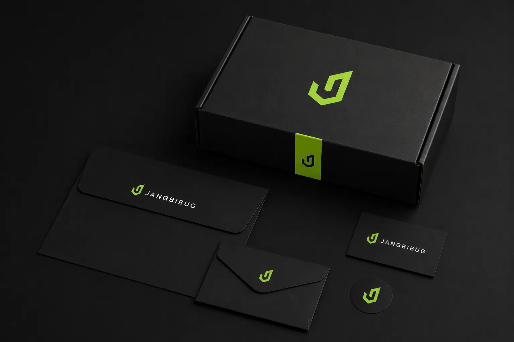
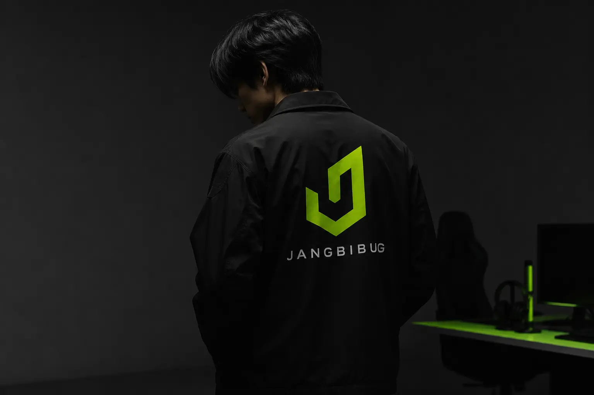

장비버그의 목표는 다양한 장비를 쉽고 신뢰성 있게 탐색하고 거래할 수 있는 플랫폼으로 자리 잡는 것이다. 구매자에게는 원하는 장비를 찾기 쉬운 환경을 제공하고, 판매자에게는 장비를 효과적으로 등록하고 판매할 수 있는 구조를 제공한다. 앱 화면에서 구매자 로그인과 판매자 로그인을 구분한 점은 양방향 플랫폼의 성격을 분명하게 보여준다. 장비버그는 장비 구매와 판매 과정을 단순화하면서도, 사용자의 취향과 몰입감을 살리는 브랜드로 설계되었다.
Portfolio / Brand Identity
JANGBIBUG
JANGBIBUG는 게이밍 장비와 디지털 장비를 중심으로 한 장비 거래·관리 플랫폼 브랜드이다. 브랜드명은 ‘장비’와 ‘버그’의 결합을 통해 장비에 깊게 몰입하는 사용자, 장비를 탐색하고 비교하는 사용자, 장비를 사고파는 사용자들의 취향을 직관적으로 드러낸다. 전체 브랜드는 블랙과 라임 그린을 중심으로 구성되어 있으며, 게이밍·테크·스트리트 감성을 강하게 전달한다. 단순한 중개 서비스가 아니라, 장비를 좋아하는 사람들이 모이고 거래하는 전문 플랫폼의 이미지를 지향한다.
- Scope
- Brand Identity / Character
- Studio
- BDLab
- Year
- 2026

장비버그의 핵심 메시지는 “장비에 꽂힌 사람들을 위한 플랫폼”으로 정리할 수 있다. 이 브랜드는 단순히 제품을 사고파는 기능보다, 장비를 좋아하는 사람들의 관심과 탐색 욕구를 중심에 둔다. 이름 자체가 장비에 집착하고 파고드는 사람의 이미지를 담고 있기 때문에, 사용자가 브랜드를 봤을 때 서비스 성격을 빠르게 이해할 수 있다. 장비버그는 장비 선택의 즐거움, 거래의 편의성, 사용자 간 연결성을 동시에 전달하는 플랫폼 브랜드다.
장비버그의 디자인은 게이밍과 테크 감성을 기반으로 강한 시각적 인상을 만든다. 블랙은 장비, 기술, 전문성, 몰입감을 표현하고, 라임 그린은 에너지와 속도감, 게이밍 특유의 주목성을 부여한다. 전체 레이아웃은 여백을 크게 사용하면서도 로고와 심볼을 강하게 배치해 브랜드의 존재감을 높였다. 후드티, 앱 화면, 목업 이미지에 적용된 그래픽은 스트리트웨어와 디지털 플랫폼의 감성을 함께 보여준다. 특히 블랙 후드티와 라임 그린 적용안은 브랜드의 팬덤화 가능성을 잘 보여주는 요소다.


